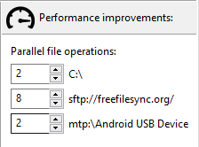

FreeFileSync can be set up to issue multiple file accesses
in parallel. This speeds up synchronization times dramatically in
cases where single I/O operations have significant latency
(e.g. long response times on a slow network connection)
or they cannot use the full bandwidth available
(e.g. an SFTP server that has a speed limit for each connection).
The number of parallel file operations that FreeFileSync should use
can be set up for each device individually
in the Comparison Settings dialog.
It is evaluated for all folder pairs of a configuration as follows:
Note
FreeFileSync implements parallel file operations by opening multiple connections to a device.
Some devices like SFTP servers have limits on how many connections they allow and will
fail if too many are attempted; see
(S)FTP Setup.